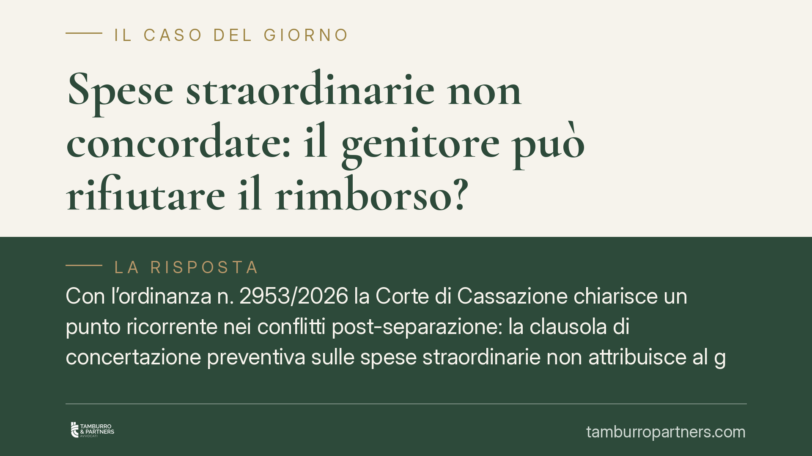

Spese straordinarie non concordate: il genitore può rifiutare il rimborso?
Con l'ordinanza n. 2953/2026 la Corte di Cassazione chiarisce un punto ricorrente nei conflitti post-separazione: la clausola di concertazione preventiva sulle spese straordinarie non attribuisce al genitore non collocatario un diritto di veto. Se la spesa è utile per il figlio e proporzionata alle risorse familiari, la quota va comunque rimborsata, anche in assenza di accordo preventivo.

Il caso e la decisione
Un genitore non collocatario si era rifiutato di rimborsare la propria quota di alcune spese sostenute dall'altro genitore per il figlio. La ragione: quelle spese non erano state concordate in anticipo, mentre la sentenza di divorzio richiedeva la concertazione preventiva.
La Cassazione, Sez. I civile, con l'ordinanza n. 2953/2026, ha respinto questa impostazione. La clausola che impone di concordare le spese straordinarie non trasforma il consenso dell'altro genitore in una condizione senza la quale nulla è dovuto. In altre parole: non esiste un diritto di veto.
Inquadramento normativo
Le spese straordinarie sono quelle non ricomprese nell'assegno di mantenimento ordinario perché imprevedibili, occasionali o di importo rilevante: pensiamo a interventi sanitari, attività sportive continuative, viaggi di studio, spese universitarie.
Il riferimento è all'art. 337-ter del Codice civile, che impone a entrambi i genitori di provvedere al mantenimento dei figli in misura proporzionale al proprio reddito. La regola della concertazione preventiva, spesso inserita nelle sentenze o negli accordi, serve a evitare decisioni unilaterali economicamente gravose. Ma la sua funzione è di coordinamento, non di blocco.
La Corte distingue tra due categorie. Per le spese straordinarie "voluttuarie" o comunque discrezionali (per esempio un'attività costosa e non essenziale), il mancato accordo può legittimare il rifiuto. Per le spese che rispondono a un interesse concreto del figlio e risultano sostenibili, invece, l'obbligo di contribuzione resta pieno: il genitore che le ha anticipate ha diritto al rimborso pro quota.
Cosa cambia per chi vive una separazione
La pronuncia ha effetti pratici immediati sul contenzioso tra ex coniugi.
Il genitore che sostiene una spesa importante per il figlio non è ostaggio del rifiuto dell'altro. Se agisce nell'interesse del minore e nei limiti di ciò che la famiglia può permettersi, potrà chiedere il rimborso anche senza aver ottenuto il via libera preventivo.
Specularmente, il genitore chiamato a rimborsare non può trincerarsi dietro la formula "non era stato concordato". Dovrà invece dimostrare, se contesta la spesa, che questa era inutile, sproporzionata o incompatibile con le proprie condizioni economiche.
Il baricentro si sposta così dall'aspetto formale (l'accordo preventivo) a quello sostanziale: l'interesse effettivo del figlio e la sostenibilità economica della spesa. È un criterio che vale anche quando il figlio è maggiorenne ma non ancora autosufficiente.
Restano decisivi due elementi probatori: la prova della finalità della spesa (che risponda a un bisogno reale del figlio) e la prova della proporzione rispetto ai redditi dei genitori. Chi anticipa dovrebbe conservare documentazione idonea; chi contesta dovrebbe farlo con motivazioni concrete, non generiche.
Cosa fare in concreto
- Comunicate per iscritto ogni spesa straordinarie rilevante prima di sostenerla, anche via e-mail o messaggistica: la concertazione resta un dovere e agevola il recupero della quota.
- Conservate tutta la documentazione: fatture, ricevute, certificati medici, iscrizioni. In caso di contestazione la prova documentale è determinante.
- Valutate la proporzione tra la spesa e i redditi di entrambi i genitori prima di procedere: una spesa sproporzionata è più esposta al rifiuto legittimo.
- Se ricevete una richiesta di rimborso che ritenete infondata, non limitatevi a un rifiuto verbale: rispondete per iscritto indicando le ragioni specifiche (non necessità, importo eccessivo, mancanza di documentazione).
- Prima di avviare un giudizio, verificate con un professionista se la spesa rientra tra quelle "necessarie" o "discrezionali": la distinzione incide sull'esito.
La decisione conferma una tendenza consolidata: nel diritto di famiglia l'interesse del figlio prevale sulle rigidità formali degli accordi tra genitori. Consigliamo comunque di mantenere sempre un canale di dialogo documentato, perché anche la migliore ragione sostanziale ha bisogno di essere provata.
---
*Contributo informativo a cura di Tamburro & Partners - Avv. Giuseppe Tamburro. Non costituisce parere legale.*
Ogni famiglia ha il suo equilibrio.
Separazione, divorzio, affidamento, assegno: se vuoi un confronto riservato su una specifica situazione, scrivi allo studio. Ti rispondiamo entro un giorno lavorativo.